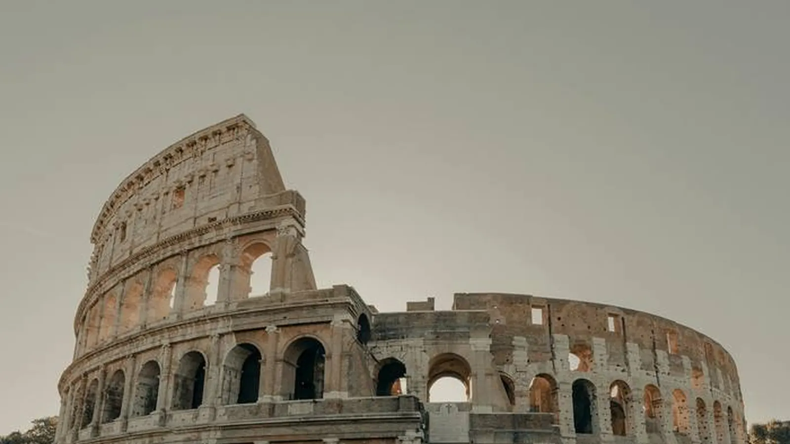

The short answer
Going to Termini or a hotel near it? Take the Leonardo Express: about 32 minutes, non-stop, around €14. Two or more people with luggage, or a hotel in the historic center? The fixed-fare taxi (€55 to anywhere inside the Aurelian Walls) is often the better deal.
Compare the options
| Option | Time | Price | Best for |
|---|---|---|---|
| Leonardo Express | ~32 min to Termini | ~€14 per person | Hotels near Termini, solo travelers |
| FL1 regional train | ~30–50 min | ~€8 per person | Trastevere, Ostiense, Tiburtina (not Termini) |
| Official taxi | 40–60 min (traffic) | €55 fixed, up to 4 people | Groups, families, late arrivals, center hotels |
| Airport buses | 50–70 min | ~€6–7 | Lowest budget, no rush |
Prices are indicative and can change — always check before you travel.
Leonardo Express
- Follow the Treni / Trains signs from arrivals to the airport station.
- Buy the ticket at the Trenitalia machines, the ticket office or in the Trenitalia app.
- Trains leave roughly every 15–30 minutes from early morning to late evening.
- It stops only at Roma Termini — from there use the metro (lines A and B) or a taxi.
FL1 regional train
Cheaper and slower, with stops at Trastevere, Ostiense and Tiburtina. Great if your hotel is in Trastevere or near Piramide/Ostiense; not useful for Termini.
Taxi: the €55 fixed fare
- Use only the official white taxis at the taxi rank outside arrivals, marked "Roma Capitale".
- The fixed fare applies to destinations inside the Aurelian Walls (most of the historic center), for up to 4 passengers with luggage.
- Say "tariffa fissa" when you get in, and ignore anyone offering a ride inside the terminal.
- Cards are accepted in official taxis.
Airport buses
Several companies run buses to Termini and Vatican area. They are the cheapest option but depend on traffic: good for light luggage and flexible plans.
Tips
- Arriving after the last train? The taxi is the only simple option.
- Trains on strike days: check train strikes in Italy before landing.
- Leaving Rome by high-speed train the same day? Compare Trenitalia and Italo.
Checked against official sources. Rules and prices change: always confirm on these sites before you travel.
Plan your trip
Some links are affiliate links: booking through them costs you nothing extra and helps keep 687 free.
From the arrivals hall to your first evening in Rome.
In 687 Italy your arrival is a stage of the trip: Check trains, Check flights and Navigate are ready on that day, and NOW plans the free hours after you land around your check-in time — so the first day is not wasted.